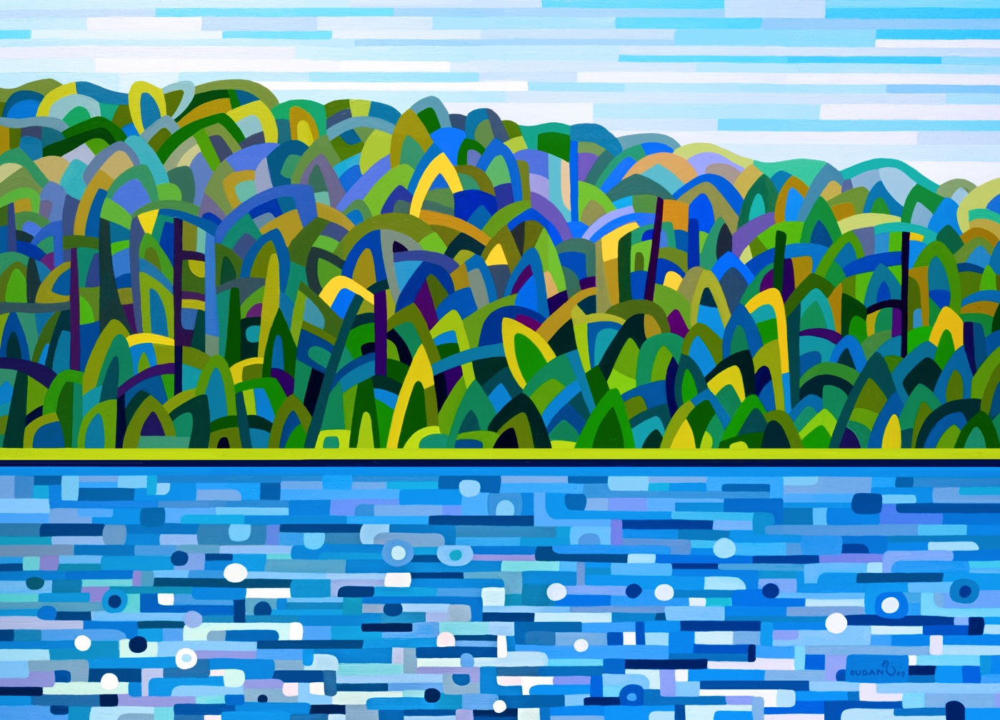

Summer, Lake of Bays
Evocative of perfect summers up in cottage country where the trees jostle each other in a friendly bid for the sun. Sparkling water, playful breezes and plentiful sunshine.

Evocative of perfect summers up in cottage country where the trees jostle each other in a friendly bid for the sun. Sparkling water, playful breezes and plentiful sunshine.